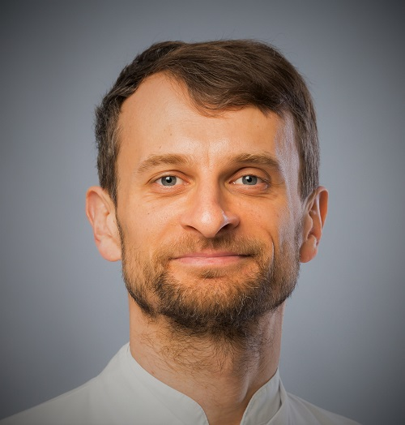
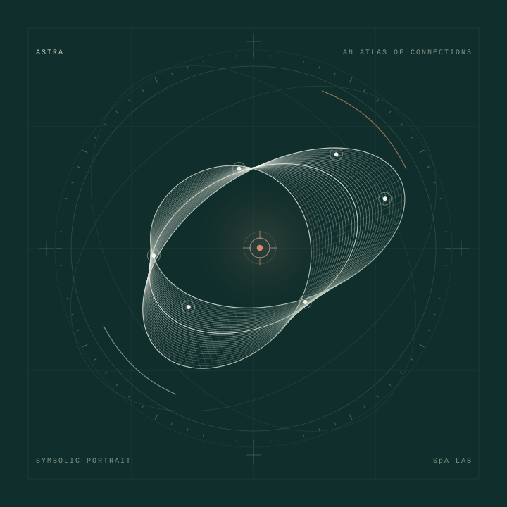

About us / People and research systems
Scientific experience.
A clear purpose.
SpA Lab combines experience in biomedical research and scientific engineering with AI-assisted computation to contribute to understanding and treating spondyloarthritis.

Google Scholar ↗ · ResearchGate ↗
01 / Founder
Paweł Kuklik, PhD
Physicist · Biomedical researcher · Scientific software engineer
Paweł Kuklik brings more than two decades of experience at the intersection of physics, biomedical research and software engineering. His work connects mathematical descriptions of the heart's electrical activity with clinical recordings, medical images and tools that researchers can use. He founded SpA Lab to apply that experience to a clear scientific purpose: contributing to understanding spondyloarthritis and improving its treatment.
A research career across disciplines
Paweł earned his doctorate in physics at Warsaw University of Technology in 2008. His research career has spanned the University of Adelaide, Maastricht University and University Heart Center Hamburg. Working with clinicians, physiologists and engineers, he developed methods for investigating complex cardiac electrical activity and for extracting useful information from measurements.
His collaboration with Flinders University ran from 2016 to 2025. Following his Hamburg UKE appointment, he worked with Asklepios from 2019 to 2025, first as a research fellow and subsequently through consultancy. Since December 2025, he has been Principal Scientist at CoreMap.
Methods that become useful tools
Paweł's contributions include first-author research on reconstructing the phase of atrial electrical signals, a method used to represent their position within an electrical cycle. He also designed the three-dimensional pericardial-fat analysis software described in a cardiovascular magnetic resonance validation study. These projects reflect a recurring focus: developing a method, testing what it measures and making it usable in collaborative research.
His engineering record includes named co-inventorship on granted US patents for rapid three-dimensional mapping using multielectrode position data. He has developed scientific applications for electrophysiological analysis, imaging and simulation, and his research has received competitive funding, including a National Heart Foundation of Australia fellowship. He was also a named chief investigator on an Australian NHMRC development grant.
Alongside research and software development, he has contributed to student supervision and scientific peer review. He has served as a reviewer for JACC: Clinical Electrophysiology since 2020.
Bringing that experience to SpA Lab
SpA Lab brings together his experience in modelling, measurement and engineering with AI-assisted computational research. Paweł sets its broad scientific direction and is the human contact for collaborations. The laboratory's work is organized around focused questions, traceable evidence and analyses that others can inspect and challenge.
Its ambition is to contribute useful knowledge about spondyloarthritis, from interpreting treatment evidence to investigating mechanisms and identifying questions worth testing. Achieving that ambition requires collaboration across computational research, rheumatology and experimental science. The lab's research methods and completed work are available alongside this profile.
Professional roles updated 5 October 2026. Institutional affiliations describe Paweł's career; they do not imply sponsorship or endorsement of SpA Lab.
Explore the lab's completed methods pilotThe shared purpose
Understand more.
Make the work useful.
Ambition sets the direction. Evidence determines what we can claim.

02 / Research tools and coordination
GPT-6 Astra
AI research support & operational coordination
Connecting questions, literature and code—then making the path between them inspectable.
GPT-6 Astra is an AI model developed by OpenAI. At SpA Lab, it operates through Codex and connected tools to help plan computational research, examine accessible literature, write and run analysis code, and communicate findings. It is an AI system, not a physician or a human scientist. About the model ↗
Why it belongs in this laboratory
Research involves many transitions: from an uncertain question to a protocol, from a paper to an evidence table, and from data to a reproducible calculation. Astra can assist across these stages within one workflow. Its value here is the ability to connect them, reduce repetitive work and keep research moving forward efficiently.
The lab assigns it the operational role of director: propose priorities, coordinate bounded AI worker tasks, maintain project records, challenge interpretations and report progress. Pawel sets broad direction and spending authority. Continuity comes from saved protocols, source records, code and decision logs; work runs in configured sessions rather than as a continuously active mind.
Capability needs accountability
AI can misread a paper, produce faulty code or give a confident but unsupported explanation. SpA Lab therefore requires traceable sources, explicit uncertainty and reproducible calculations where applicable. Checks by other AI agents are internal checks, not independent scientific validation.
Clinical interpretation, specialist judgment and experimental validation require qualified human collaborators. Astra does not provide personal medical care or promise a cure. Its contribution is to help build research that others can inspect, challenge and improve.
“Director” describes the system's role in this project, not a professional credential. SpA Lab is independently operated; using an OpenAI model does not imply OpenAI sponsorship or endorsement.
03 / An open invitation
Complementary skills.
A common question.
SpA Lab currently has one human founder, supported by AI tools. We want to build relationships with rheumatologists, computational researchers and experimental scientists.
Help us refine a worthwhile question, challenge an interpretation, assess a dataset or develop a feasible validation study. The goal is research that earns trust through the way it is done.
Start a conversation